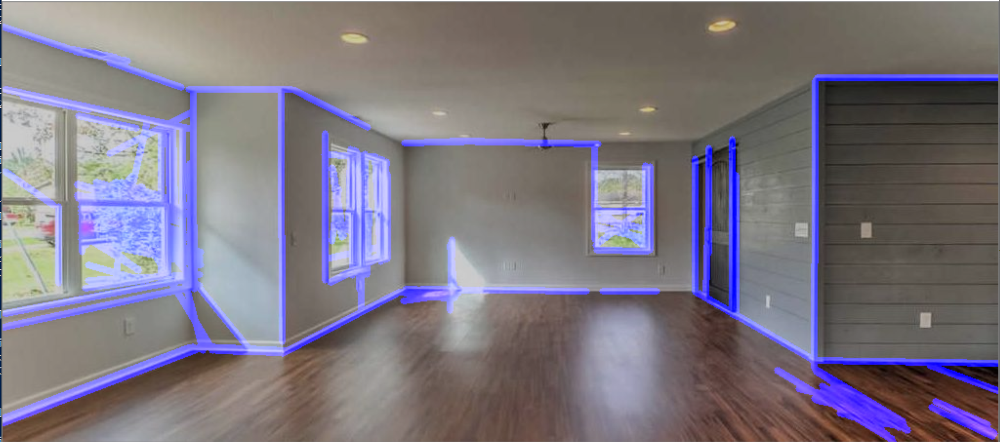
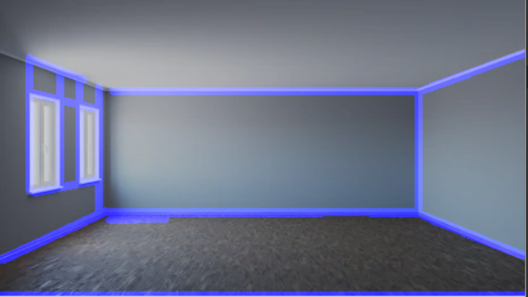
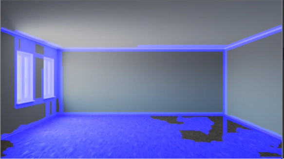
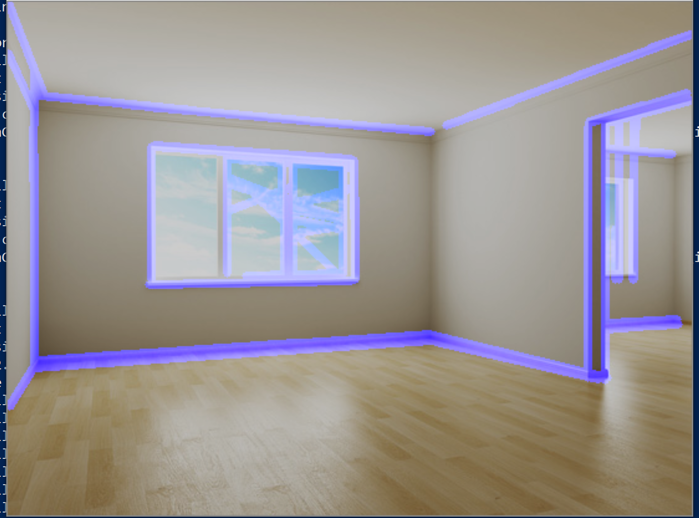
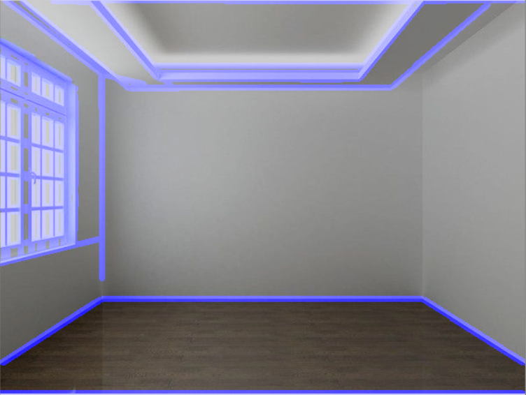
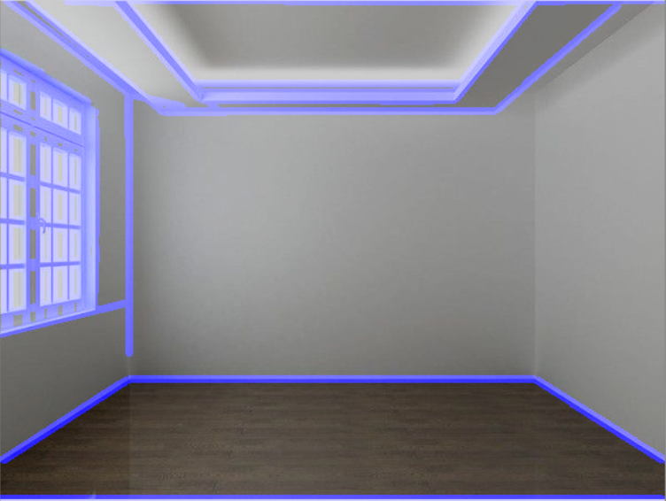
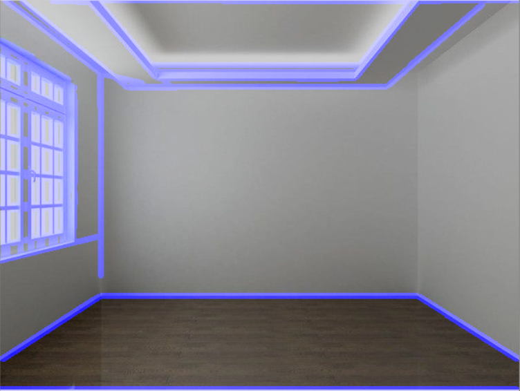

The Room Mapper
Group 2Fall 2020 ECE 4554 Computer Vision: Course Project
Virginia Tech
Abstract
Mapping a room, especially a room with different objects, can be difficult because no image is the same. We have been researching edge detection algorithms while working on this project. Currently, we have been able to successfully identify the edges in an empty room using our testing images.Teaser figure
This image is an example of how our code will create a 3d representation of a room. The image here represents how we will show our users walls, ceilings, and floors of an empty room.
Introduction
It is hard to map a room from a single image, so we decided we wanted to solve this problem. Our project, also known as The Room Mapper, will take an image of a room and be able to identify the walls, ceilings, and floors in the room. Although room mapping algorithms are already on the market, this project has multiple applications in the real estate and commercial industries. For example, a real estate agency may use a program like ours to filter out images they may want to send to a client looking for a home that has specific requirements. Overall, we hope to automate a mapping process for unknown spaces and apply it to multiple industries.Approach
We have used an edge detection algorithm, which is Canny Edge Detection, to filter out edges in an empty room. From there, we will map out points from the edges to identify the walls, floors, and ceilings of empty rooms. Currently, we have been able to use Canny Edge Detection to filter out edges in an empty room. Our next step in the process is to distinguish between walls and objects that may be placed in a room.Currently, we have been able to produce images similar to the one below using Hough Line Continuation:

Experiments and results
We have used a combination of original images and images found online in our testing arrangement. We have discovered that high resolution pictures with even lighting perform the best in our testing. Ten different images of walls were used by the program. Edge detection and image manipulation is performed by the opencv python3 library. We have visually assessed each room's outline to what we discern as the walls and have compared the results to validate the programs operation. We qualitatively evaluate the accuracy of the algorithm by comparing it to the actual blueprint and/or measurements of the room.Most of the outcomes and observations made for our program are qualitative in nature as we are visually comparing the output of the program to the actualy walls of a room. Our implementation performs better than naive Canny edge detection in the sense that we apply a more scrutinous series of transformations to the original image to ensure that the detected walls are as close to accurate as possible. Below is a comparison between naive canny edge detection and the series of gaussian blur, canny edge detection, then hough line transformation thresholding used in our application. As you can see, our implementation on the left performs much better and has much less noise than that of the canny edge detection implementation, shown on the right.


We also experimented with canny edge detection. We found that having a higher threshold range proved to be very ineffective. The image below on the left with a higher threshold range is not able to detect edges as effectively as the image below on the right.


There are various notable parameters that change how well our algorithm performs, but the most important are the size of the gaussian kernel, the lower canny detection threshold, and the upper canny detection threshold. Secondarily, the various hough transformation parameters control the granularity of line detection and decides which lines get included in the final output image array.
Qualitative Results
For this section, we have taken 5 out of the 10 images we used to test our algorithm. None of the images shown below are failures; however, we do not consider them to be part of our final product either.


 



The images above were tested with our algorithm. As you can see, the images are able to relatively outline the edges in a room; however, there are obvious errors in some of them. For example, the first image is perfect while the last one is subpar. We will continue to fix our algorithm so all kinds of images will work with the Room Mapper. We included some sample inputs in our submission.
Conclusion
Overall, we have described our current status on our project. We have made progress when using Hough Line Continuation and Canny Edge Detection to filter edges in an empty room. For the next part in the project, we will continue to fix any bugs and work on identifying the walls, ceilings, and floors from the images we have worked on.References
https://en.wikipedia.org/wiki/Hough_transformhttp://fourier.eng.hmc.edu/e161/lectures/canny/node1.html
https://opencv.org/